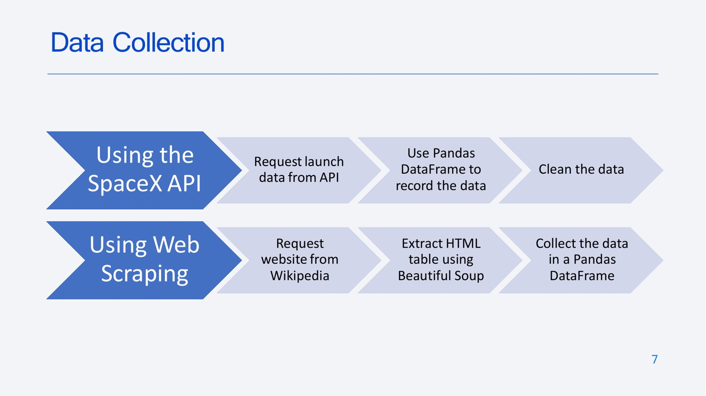
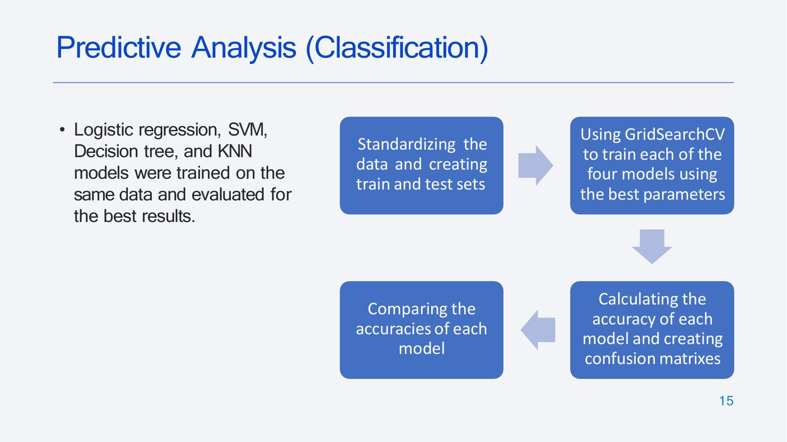
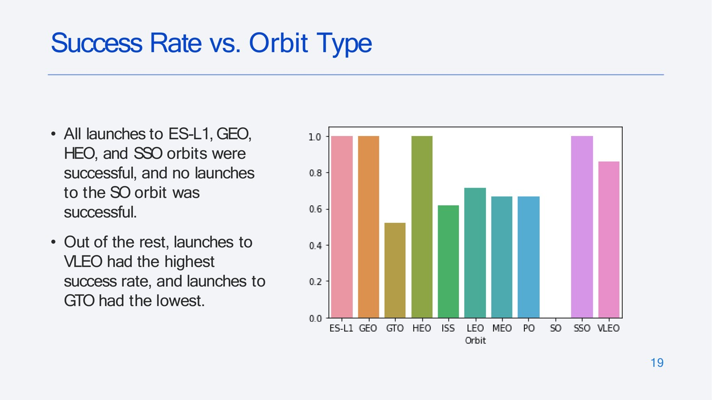
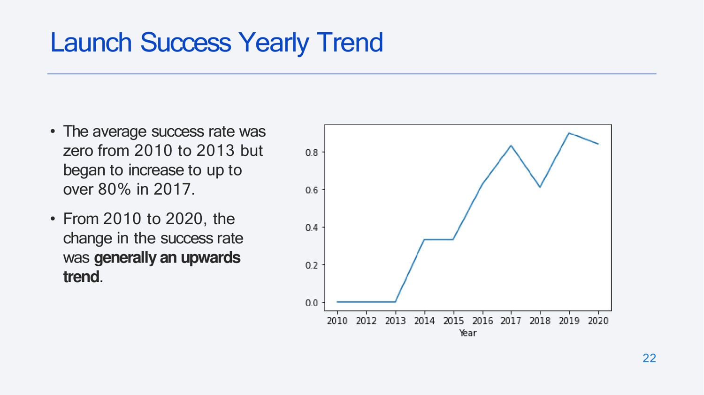
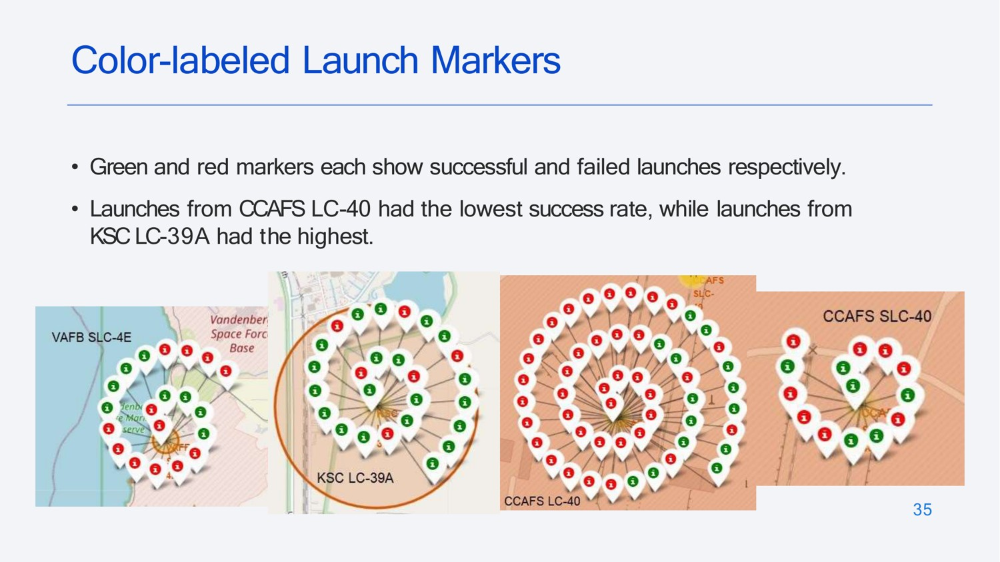
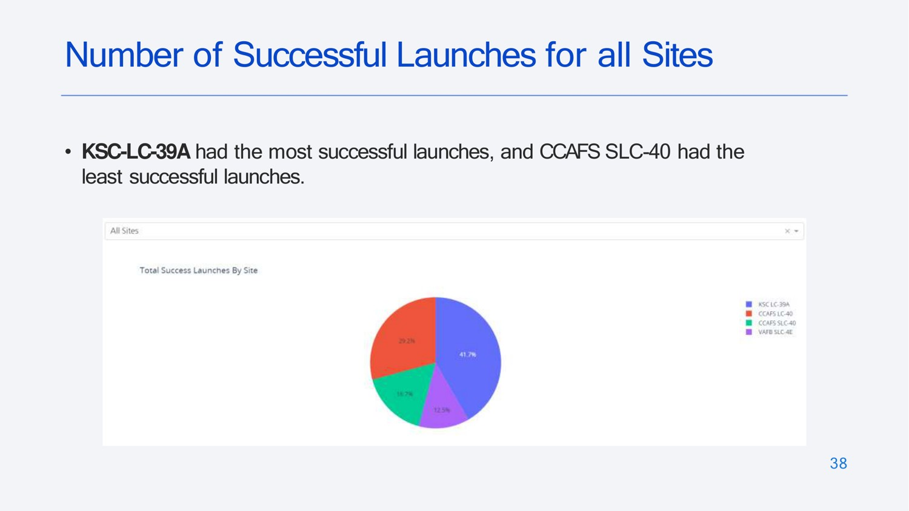
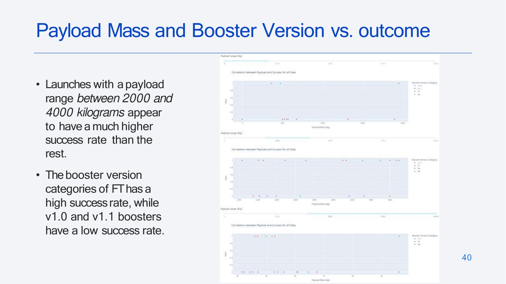
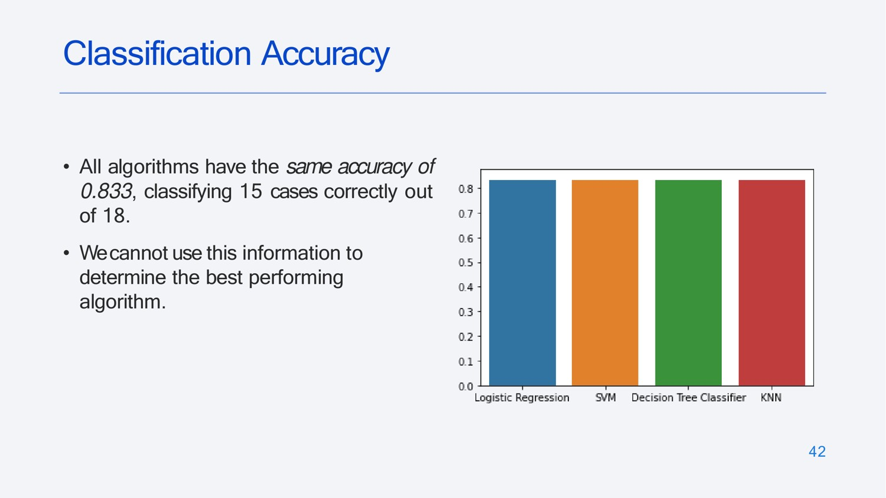
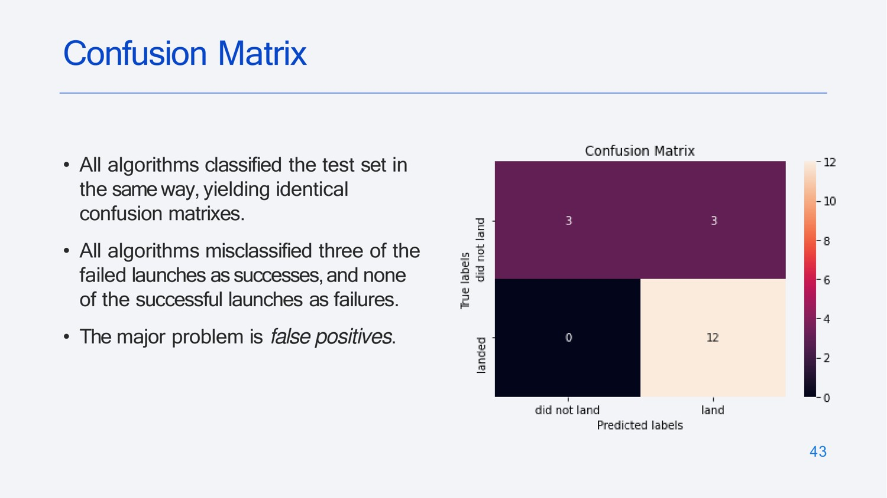

SpaceX Falcon 9 Landing Prediction

Research overview
Research objective
Predict whether the Falcon 9 first stage will land successfully using publicly available launch data.
Methodology
Data collection, exploratory analysis with SQL and visualisations, interactive maps and dashboards, and comparison of four classification algorithms.
Results and interpretation
All four models achieved 83.3% test accuracy (15 of 18 cases). Three failed launches were classified as successes. The report therefore does not establish a single best model.
Research visualisations


















Read the full capstone report
Original academic document · 45 pages · personal student identifiers removed where found.
Open full PDF in new tab Download PDF
If your browser cannot display the embedded PDF, use the open or download link above.
Source code and project files
Explore the original implementation and available project materials in the GitHub repository.
View project on GitHub ↗